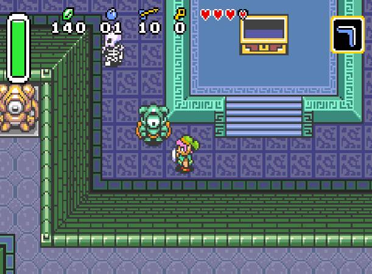

Introduction
Party Junkie est un projet mené par Tristan (A2) sur le developpement de jeux vidéos en 2D vue du dessus (pour le moment). Il utilisera un système de carte a tuile (tilemap). Pour ce qui est de la Story Board du jeux, il vous laisse choisir au grès de votre imagination.
